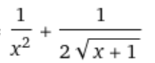
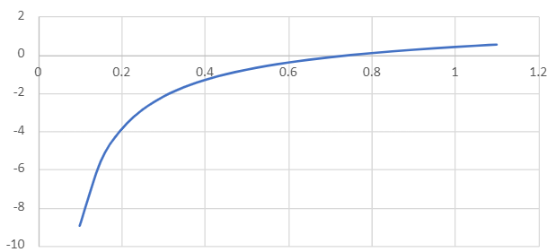

Analiza Matematică + Grafic
Funcția necesar a fi analizată este:
f(x)= sqrt(x+1) - 1/x
Iar derivata ei este:
f'(x)=
Cu ajutorul graficelor din aplicația Excel putem da valori:
Iar graficul funcției este:

Înapoi